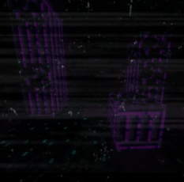

- Designation
- SO-02-08
- Branch
- Southern Branch
Description
Due to the nature of SO-02-08, it is difficult to take a clear picture of anything within it. SO-02-08 is the chunk of a town located somewhere in Northern Bablateville, connected to the Southern branch via warping methods. Every structure in SO-02-08 has experienced heavy assimilation by the South. Furthermore, all but one of these structures have what appears to be large purple pillars lodged in them, together with heavy collateral damage around said pillars. Ever since its discovery, SO-02-08 has displayed no signs of living residents.
Ability
Apart from the initial assimilation when a connection to SO-02-08 was established, it has no effect on the outside world. The only breaching this hensa is capable of is permitting stray mobs to travel from SO-02-08 to our world (more on that later; refer to Story).
Origin
The entire town in which SO-02-08 derives was originally located in Northern Bablateville, otherwise known as the ‘South’. However, thanks to the abilities of our top agents, we were able to extract a chunk, SO-02-08, and store it within a pocket dimension. Our scientists managed to reverse engineer the purple pillars found in SO-02-08 to create a solid connection between the Southern branch and SO-02-08. Prior to assimilation by the South, SO-02-08 was thought to be an average Bablateverse neighborhood with no peculiar features.
Details
Nothing that isn’t covered in the Story, really. Just make sure to stop any random mobs from leaving the containment unit, okay?
Escape Information
Refer to Details.
Story
<The Present>
The original Story file has been lost as a result of the last agent’s endeavors, but I can explain what it’s doing here, now that it’s in the world of Peo SMP. I am unsure why the Southern branch has suddenly teleported to our world, but it’s evident that the Nether has become the dimension storing SO-02-08, as it is nearby, convenient, and hidden from external forces. However, due to where our world is located relative to the Peoverse, some distortions have occurred - for whatever reason, there is a Pokemon center in the town? I doubt that was there originally.
<Oddities>
Preliminary explorations by our scouts showed that all but one of the buildings in SO-02-08 contained four purple pillars. There are possible theories suggesting why the one building lacked any pillars, which were mainly inspired by the fact that it was practically fully assimilated. However, our scientists recommended that we do not spend a considerable amount of time within SO-02-08 as to avoid any effects of the South. As a result, no in-depth review of that specific building has been completed up to this day.
Another notable feature of SO-02-08 are the numerous stone structures. Purple in color, they are scattered all over the chunk, even on the outskirts of SO-02-08 itself. The explanations provided by other agents at base leads me to believe they are dead trees of some sort, but I can’t say I fully support their ideas.